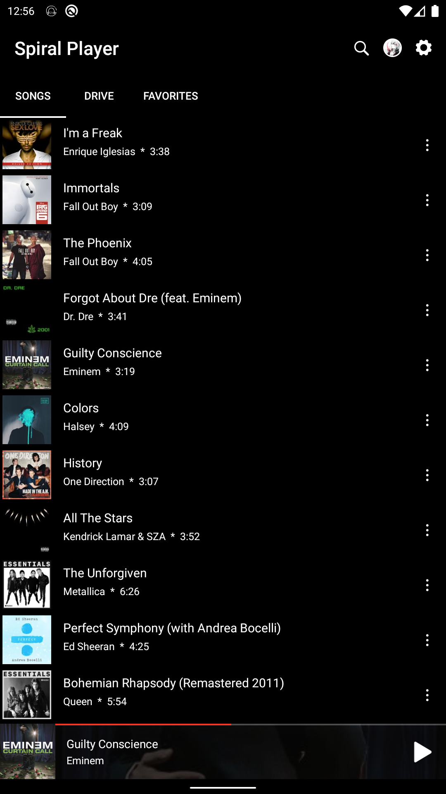
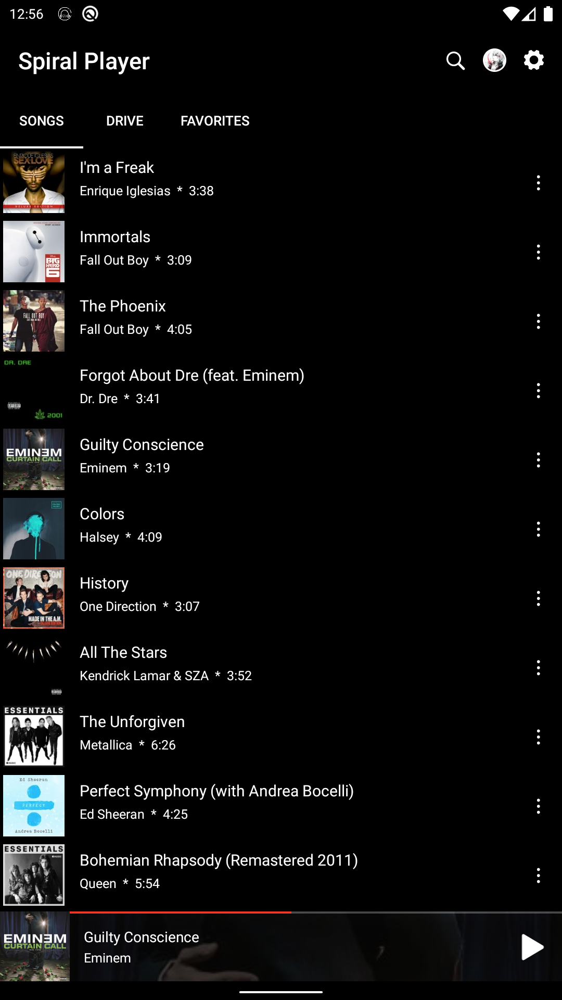
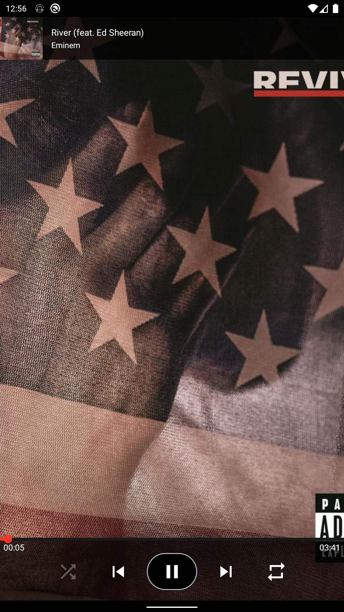
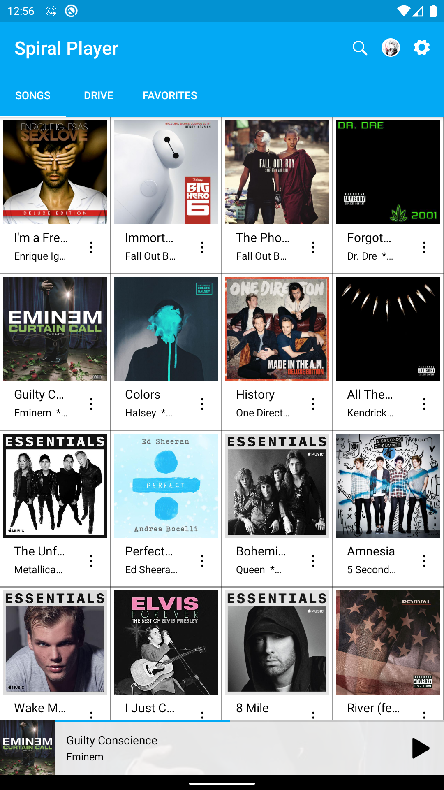

Dark & Light Theme
Tons of theme options, including light & dark mode.
Music Player for Google Drive
Dark & Light Theme
Tons of theme options, including light & dark mode.
Google Drive Music Playback
Local and google drive music playback.
Grid Mode
Grid/List view Mode.
With spiral player you can play, download songs directly from your google drive.
Features:
• Local and google drive music playback
• Extremely customizable
• Tons of theme options, including light & dark mode
• Support all the most popular music file formats.
• Swipe left or right on player to change tracks
• Grid/List view Mode
• Quick search
• Easy navigation
• Customizable span count for grid mode
• Customizable sections
• Enable/disable artwork
• Create favorites list with both songs from your google drive and device storage